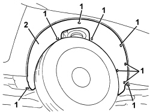

7055B91 RIGHT FRONT WHEEL ARCH LINER - R.R.
- Path
- Procedures > 70 FITTINGS > 7055 MOULDINGS AND PROTECTION > 7055B EXTERIOR PROTECTIONS > 7055B91 RIGHT FRONT WHEEL ARCH LINER - R.R.
- Kind
- repair procedure (removal / refitting; the operation number is the code)
- Applies to
- all engines; all production periods
- Interactive page
- https://sloeber94.github.io/elrnDB/#/939011364
Applies to: all engines; all production periods
 Removing
Removing
 Refitting
Refitting- Position the vehicle on a lift.
- Raise the vehicle.
1. Undo the bolts fixing the wheel arch.
2. Remove the wheel arch releasing it from its housing.

Applies to: all engines; all production periods
Refitting
Removing- Check that the wheel arch is not damaged.
- Place the wheel arch in position and fit it.
- Tighten the wheel arch retaining bolts.
- Remove the vehicle from the lift.
Topics that link to this page (36)
- 1004B10 POWER UNIT WITH MANUAL GEARBOX - R.R
- 1008A46 POWER UNIT RIGID SUPPORT - TIMING SIDE - R.R.
- 1016C10 SINGLE CYLINDER HEAD - R.R. AND REPLACE GASKET
- 1020A20 CRANKCASE OIL SUMP - R.R CLEAN SURFACES FOR SEALANT APPLICATION
- 1020D14 FRONT CRANKSHAFT OIL SEAL COVER - R.R AND REPLACE SEALS FOR VERSIONS WITH OIL PUMP ON CRANKSHAFT, TIMING SIDE
- 1020D18 FRONT CRANKSHAFT COVER OIL SEAL - R.R.
- 1032B10 TOOTHED TIMING BELT - R + R FOR TIMING ADJUSTMENT OR REPLACEMENT
- 1032C42 TIMING BELT TENSIONER SUPPORT - R.R
- 1036L10 CAMSHAFTS IN CAMSHAFT HOUSING - R.R. - INCLUDES CAMSHAFT HOUSING REPLACEMENT IF NECESSARY
- 1036L30 FRONT OIL SEAL FOR CAMSHAFT IN CAMSHAFT HOUSING - REPLACE
- 1056F46 PHASE TRANSFORMER SOLENOID, LEFT CYLINDER HEAD INTAKE OR EXHAUST - R.R.
- 1056F47 PHASE TRANSFORMER SOLENOID, RIGHT CYLINDER HEAD INTAKE OR EXHAUST - R.R.
- 1056F55 LEFT CYLINDER HEAD INTAKE OR EXHAUST CAM ANGLE SENSOR - R.R.
- 1060E10 DIESEL INJECTION PRESSURE PUMP - R.R.
- 1060E30 PRESSURE PUMP DRIVE PULLEY - R.R.
- 1060E40 PRESSURE PUMP SUPPORT - R.R.
- 1060G90 SYSTEM CABLE LOOM - R.R.
- 1064A22 VARIABLE GEOMETRY TURBOCHARGER R R
- 1072B10 INLET MANIFOLD - R + R AND REPLACE SEAL
- 1084B26 ENGINE OIL INTAKE DUCT - R.R
- 1088C10 WATER PUMP - R + R
- 1088C22 WATER PUMP PULLEY - R.R.
- 1088D24 WATER PUMP RIGID COOLANT INLET PIPE - R.R.
- 1092A10 CRANKSHAFT PULLEY - R + R
- 1092B80 AUXILIARY BELT FIXED TENSIONER (ONE) - R+R
- 1092C26 BELT FROM AIR CONDITIONER COMPRESSOR DRIVING POWER STEERING PUMP - R + R
- 1092G10 SINGLE ENGINE BELT - R.R
- 1092G14 ENGINE COMPONENT SINGLE BELT MOVING TENSIONER - R + R
- 3340B41 RIGID PIPE FROM INTERMEDIATE CONNECTOR TO RIGHT FRONT BRAKE - R.R.
- 4130B20 POWER STEERING PUMP - R.R.
- 5040A20 AIR CONDITIONING COMPRESSOR - R+R - INCLUDES FLUID LEVEL CHECK AND TOP UP IF NECESSARY
- 5040A26 AIR CONDITIONING COMPRESSOR SUPPORT - R.R.
- 5505C28 ENGINE COMPARTMENT AND A.B.S BUILT-IN WIRING - R.R.
- 5530A10 ALTERNATOR - R+R
- 7030B38 SLIDING ROOF DRAINAGE PIPES (WATER DRAIN) - CHECK
- 7210E18 R.R. FRONT WING